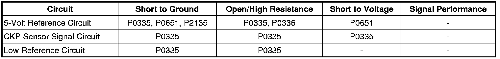

P0336
DTC P0336
Diagnostic Instructions
* Perform the Diagnostic System Check - Vehicle (Initial Inspection and Diagnostic Overview) prior to using this diagnostic procedure.
* Review Strategy Based Diagnosis (Initial Inspection and Diagnostic Overview) for an overview of the diagnostic approach.
* Diagnostic Procedure Instructions (Initial Inspection and Diagnostic Overview)provides an overview of each diagnostic category.
DTC Descriptors
DTC P0336
- Crankshaft Position (CKP) Sensor Performance
Diagnostic Fault Information

Circuit/System Description
The crankshaft position (CKP) sensor circuits consist of an engine control module (ECM) supplied 5-volt reference circuit, low reference circuit and an output signal circuit. The CKP sensor is an internally magnetic biased digital output integrated circuit sensing device. The sensor detects magnetic flux changes of the teeth and slots of a 58-tooth reluctor wheel on the crankshaft. Each tooth on the reluctor wheel is spaced at 60-tooth spacing, with 2 missing teeth for the reference gap. The CKP sensor produces an ON/OFF DC voltage of varying frequency, with 58 output pulses per crankshaft revolution. The frequency of the CKP sensor output depends on the velocity of the crankshaft. The CKP sensor sends a digital signal, which represents an image of the crankshaft reluctor wheel, to the ECM as each tooth on the wheel rotates past the CKP sensor. The ECM uses each CKP signal pulse to determine crankshaft speed and decodes the crankshaft reluctor wheel reference gap to identify crankshaft position. This information is then used to sequence the ignition timing and fuel injection events of the engine. The ECM also uses CKP sensor output information to determine the camshaft relative position to the crankshaft, to control camshaft actuator, and to detect cylinder misfire
Conditions for Running the DTC
* DTC P0340, P0341, P0641 or P0651 is not set.
* The engine is cranking or running.
* The DTC runs continuously when the above conditions are met.
Conditions for Setting the DTC
Important: The ECM detects engine movement by sensing the airflow through the mass air flow (MAF) sensor is more than 3 g/s, or by sensing CMP sensor pulses.
* The ECM detects that the engine is running, but receives less than 51 or more than 65 CKP sensor pulses each engine revolution for 8 of 10 engine revolutions.
* The ECM detects that the engine is running, but more than 19 resyncs occur within 25 seconds.
* The ECM detects that the engine has been running, but the crankshaft does not sync for 0.4 second.
Action Taken When the DTC Sets
DTC P0335 is a Type B DTC.
Conditions for Clearing the DTC
DTC P0335 is a Type B DTC.
Reference Information
Schematic Reference
Engine Controls Schematics (Electrical Diagrams)
Connector End View Reference
Component Connector End Views (Connector Views)
Description and Operation
Electronic Ignition (EI) System Diagnosis (Electronic Ignition (EI) System Diagnosis)
Electrical Information Reference
* Circuit Testing (Component Tests and General Diagnostics)
* Connector Repairs (Component Tests and General Diagnostics)
* Testing for Intermittent Conditions and Poor Connections (Component Tests and General Diagnostics)
* Wiring Repairs (Component Tests and General Diagnostics)
DTC Type Reference
Powertrain Diagnostic Trouble Code (DTC) Type Definitions (Diagnostic Trouble Code Descriptions)
Scan Tool Reference
Control Module References (Programming and Relearning)for scan tool information
Circuit/System Verification
1. With the ignition OFF, inspect the engine wiring harnesses carrying the CKP sensor circuits for the following conditions:
* Close routing of aftermarket electrical equipment
* Close to solenoids, motors, and relays
• Correct any wire harness routing or component placement conditions, if it is determined to be a possible source of electrical interference.
2. With the ignition ON, and the engine OFF, use the live plot function on the scan tool. Select the engine speed parameter and the CKP sensor parameter. Change the minimum spec to 400 RPM for both parameters. Change the maximum spec to 4,000 RPM for both parameters.
3. Start the engine and observe the scan tool.
4. Quickly accelerate and release the accelerator pedal several times. DO not accelerate pass 4,000 RPM. Two graphed lines on the live plot display should track together across the screen.
5. Operate the vehicle within the Conditions for Running the DTC. You may also operate the vehicle within the conditions that you observed from the Freeze Frame/Failure Records data.
Circuit/System Testing
1. Ignition OFF, inspect the CKP sensor for correct installation.
• If the sensor is loose, inspect the sensor and the O-ring for damage, replace as necessary.
2. Inspect the engine for the following conditions:
* The engine oil for debris
* The crankshaft reluctor wheel for damage
* The timing chain, tensioner, and sprockets for wear or damage
Component Testing
Important: You must perform the Circuit/System Testing before proceeding with Component Testing.
1. Inspect the CKP sensor for correct installation. Remove the CKP sensor from the engine and inspect the sensor and the O-ring for damage.
• If the sensor is loose, incorrectly installed, or damaged; repair or replace the CKP sensor.
2. Connect the CKP Sensor connector to the CKP sensor. Turn ON the ignition, with the engine OFF.
3. Ignition ON and engine OFF. Observe the CKP Active Counter while passing a steel object across the tip of the sensor repeatedly. The CKP Active Counter parameter should increment.
• If the parameter does not increment, replace the CKP sensor.
Repair Instructions
Perform the Diagnostic Repair Verification (Verification Tests) after completing the diagnostic procedure.
* Crankshaft Position Sensor Replacement (Service and Repair)
* Control Module References (Programming and Relearning)